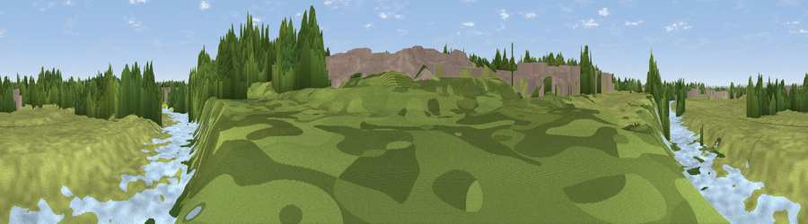

Viewpoint near Grinsdale
#45734 in England · top 100% of its area beats it · near Grinsdale · footpathWhere it is
The exact computed spot (NY 38004 56501). Click the marker for map links.
Public access: a public right of way passes within 16 m of this spot. Computed from Natural England's CRoW access layer and OpenStreetMap rights of way — not the legal definitive map. Always verify locally.
The view, rendered

A 360° render of this exact spot computed from the terrain model, tree cover and land cover — summer colours, afternoon light, calibrated against photographs of famous viewpoints. Real trees, hedges and buildings will differ in detail.
The panorama
Grey silhouette: terrain skyline in each direction (720 bearings, Earth curvature and refraction included). Dashed green: skyline with trees (+15 m) and buildings (+8 m) as obstacles. Blue strip: how far the ground is visible on each bearing.
Where the view opens
Wedge length = distance to the farthest visible ground on that bearing (vegetation-aware). Rings at 10, 25 and 50 km.
What fills the view
52% grassland · 31% woodland · 15% water · 2% built-up
Angular shares of the visible panorama (visual magnitude), not map area. Landscape diversity 0.48 (0–1 Shannon).
Key numbers
More beautiful places nearby
The staircase of upgrades: each row has a higher view potential than everything closer. Driving times are estimates from straight-line distance, calibrated against real road routing — check an actual route before setting out.
| Place | Direction | Drive | Score |
|---|---|---|---|
| Parson's Thorn | WSW · 6 km | ~13 min | 56.8 |
| Viewpoint near Rockcliffe | NNW · 7 km | ~15 min | 67.5 |
| Barrock Fell | SE · 13 km | ~23 min | 81.1 |
| Viewpoint near Bassenthwaite | SSW · 29 km | ~46 min | 82.8 |
| Skiddaw South Top | SSW · 30 km | ~47 min | 85.8 |
| Ullock Pike | SSW · 31 km | ~48 min | 89.4 |
| Long Side | SSW · 31 km | ~48 min | 89.5 |
| Viewpoint near Finsthwaite | S · 68 km | ~91 min | 90.3 |
54.89937, -2.96826 · source: osm viewpoint · position refined by local search. Computed location — check access rights before visiting.